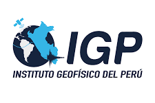
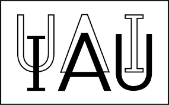
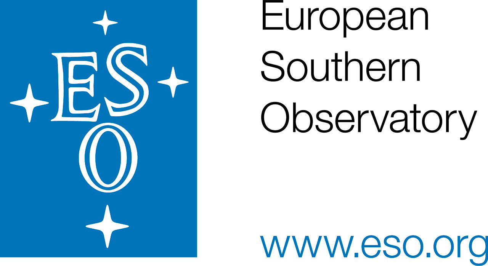
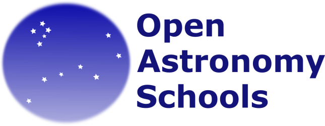
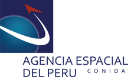
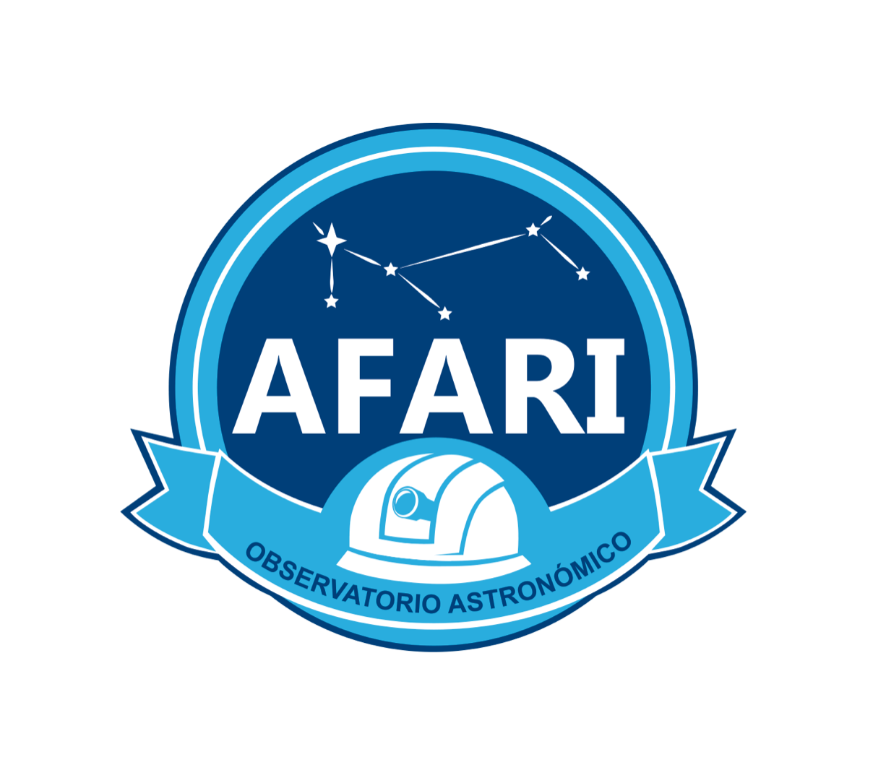

La ciencia nos hace libres. Usamos la astronomía como puerta de entrada a la ciencia para despertar la curiosidad, fortalecer el pensamiento crítico y acercar oportunidades científicas a niñas, niños y jóvenes.
Capacitamos a docentes en astronomía, método científico, aprendizaje por indagación e innovación educativa en ciencias. La astronomía permite conectar de manera natural conceptos de física, matemática, química, biología, tecnología y ciencias ambientales, por lo que ofrece una herramienta poderosa para enriquecer las clases de Ciencia y Tecnología con experiencias prácticas, motivadoras y alineadas con el currículo escolar.
Además, acompañamos la creación de Astroclubes escolares, desarrollamos materiales accesibles para contextos de baja conectividad e impulsamos una Red de Embajadores CosmoAmautas: docentes líderes que multiplican la metodología en sus regiones, fortaleciendo comunidades educativas locales y contribuyendo a una mejora sostenible de la enseñanza científica.
Por eso trabajamos para que cada estudiante pueda aprender haciendo ciencia, conectar el Universo con su propia cultura y descubrir que la ciencia también puede ser parte de su futuro.
Capacitamos a docentes en astronomía, método científico y aprendizaje por indagación para fortalecer la enseñanza de las ciencias.
Más informaciónAcompañamos clubes escolares donde estudiantes exploran el Universo con actividades científicas, observación del cielo y proyectos.
Más informaciónImpulsamos la iniciación científica y la mentoría en astronomía para estudiantes universitarios peruanos.
Más informaciónEl trabajo de CosmoAmautas ha sido reconocido por instituciones de prestigio nacional e internacional.
Office of Astronomy for Development — IAU
Nuestro proyecto fue seleccionado en el 2020 y el 2022 por la Oficina de Astronomía para el Desarrollo de la Unión Astronómica Internacional para financiar talleres y AstroClubes. Los procesos de selección fueron altamente competitivos, sobresaliendo entre iniciativas de desarrollo de todo el mundo.
Innovación educativa en zonas rurales
Reconocidos como finalistas del premio Ruralia por nuestro impacto en la educación científica en escuelas rurales del Perú, en particular por nuestro proyecto de Embajadores y replicas locales de nuestras capacitaciones.
Banco Interamericano de Desarrollo (BID)
Seleccionados para el Banco Interamericano de Desarrollo y CONCYTEC como una de las iniciativas de referencia en América Latina por su enfoque pedagógico de calidad, su impacto territorial en zonas rurales del Perú, y contribución destacada al cierre de brechas de género en vocaciones científicas.
Lo último que está pasando en CosmoAmautas y nuestros AstroClubes.
CosmoAmautas participa con un stand por primera vez en el Día Internacional de la Astronomía (DIA) 2026 en Cajamarca.
Iniciamos las sesiones virtuales con 50 docentes seleccionados de 21 regiones del Perú.
Docentes de todo el país inauguran sus AstroClubes antes del taller, con cientos de estudiantes inscritos.
Publicamos actualizaciones (incl. resultados del JWST) de nuestro libro de 160 páginas con contenido y actividades para docentes.
Nuestra experiencia y resultados aparecen en una publicación internacional sobre educación en astronomía.
Varios AstroClubes colaboraron para medir el radio de la Tierra siguiendo el método de Eratóstenes.






{kind=link}
{kind=link}
{kind=link}
{kind=link}
{kind=link}
{kind=link}